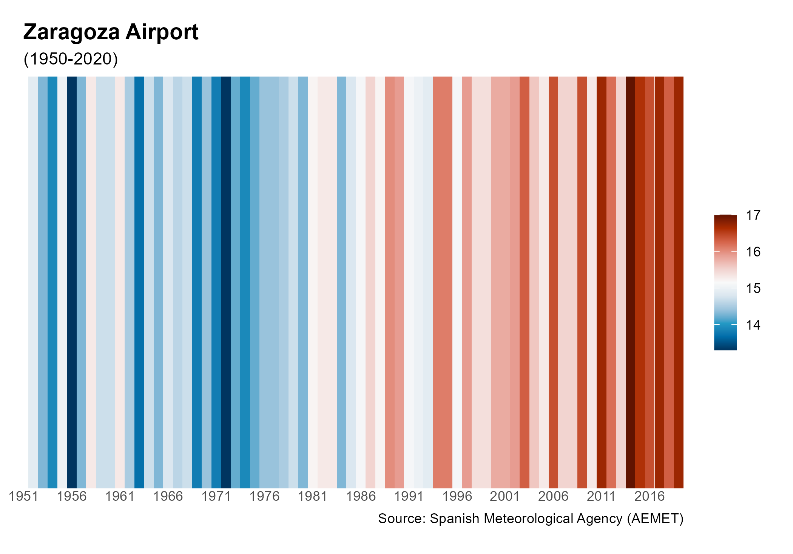
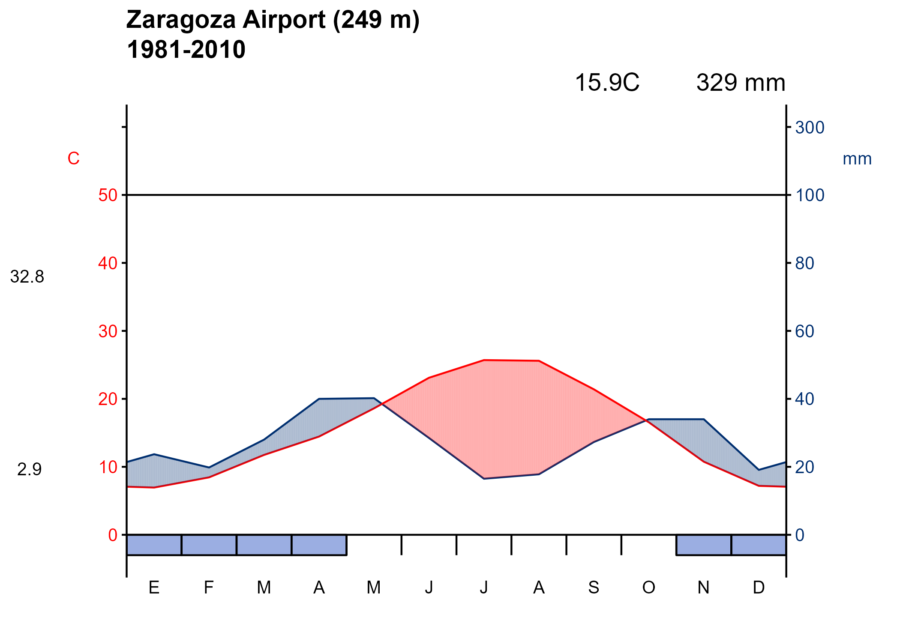
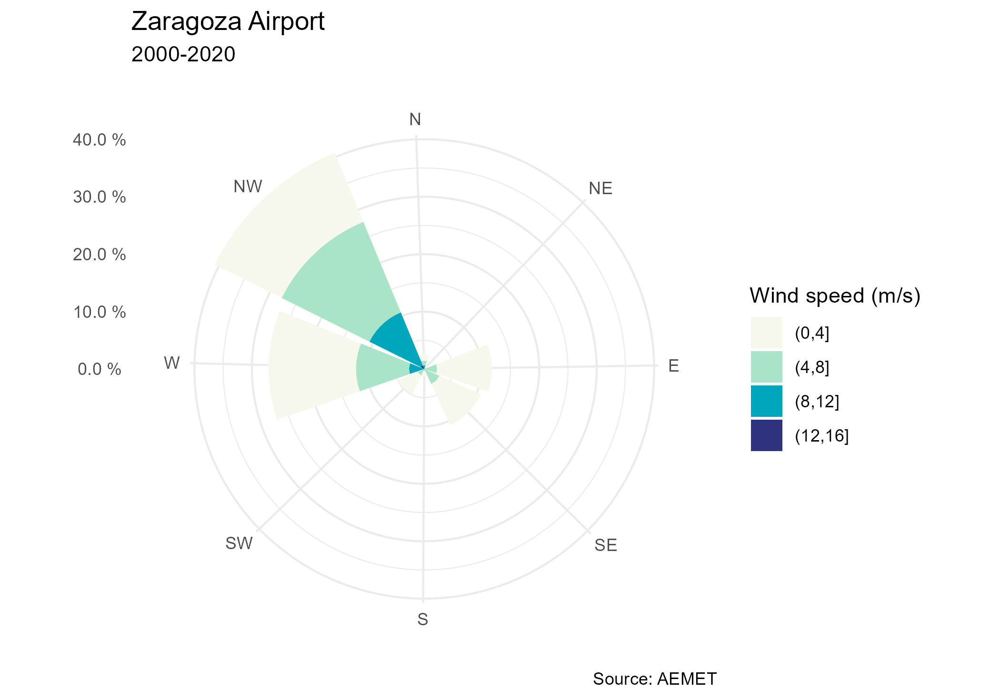
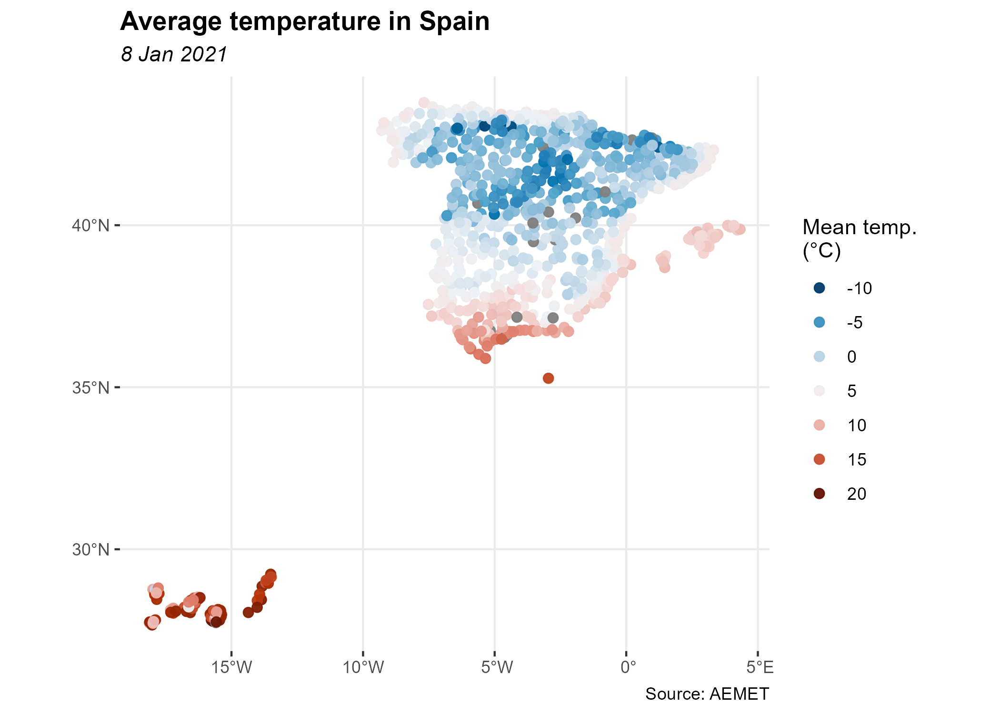

The goal of climaemet is to serve as an interface to download the climatic data of the Spanish Meteorological Agency (AEMET) directly from R using their API and create scientific graphs (climate charts, trend analysis of climate time series, temperature and precipitation anomalies maps, “warming stripes” graphics, climatograms, etc.).
Browse manual and vignettes at https://ropenspain.github.io/climaemet/.
AEMET Open Data
AEMET OpenData is a REST API developed by AEMET that allows the dissemination and reuse of the Agency’s meteorological and climatological information. To see more details visit: https://opendata.aemet.es/centrodedescargas/inicio
License for the original data
Information prepared by the Spanish Meteorological Agency (© AEMET). You can read about it here.
A summary for the usage of the data could be interpreted as:
People can use freely this data. You should mention AEMET as the collector of the original data in every situation except if you are using this data privately and individually. AEMET makes no warranty as to the accuracy or completeness of the data. All data are provided on an “as is” basis. AEMET is not responsible for any damage or loss derived from the interpretation or use of this data.
Installation
You can install the released version of climaemet from CRAN with:
install.packages("climaemet")You can install the developing version of climaemet using the r-universe:
# Install climaemet in R:
install.packages("climaemet",
repos = c("https://ropenspain.r-universe.dev", "https://cloud.r-project.org")
)Alternatively, you can install the developing version of climaemet with:
library(remotes)
install_github("ropenspain/climaemet")API key
To be able to download data from AEMET you will need a free API key which you can get here.
library(climaemet)
## Get api key from AEMET
browseURL("https://opendata.aemet.es/centrodedescargas/obtencionAPIKey")
## Use this function to register your API Key temporarly or permanently
aemet_api_key("MY API KEY")Changes on v1.0.0!
Now the apikey parameter on the functions have been deprecated. You may need to set your API Key globally using aemet_api_key(). Note that you would need also to remove the apikey parameter on your old codes.
Now climaemet is tidy…
From v1.0.0 onward, climaemet provides its results in tibble format. Also, the functions try to guess the correct format of the fields (i.e. something as a Date/Hour now is an hour, numbers are parsed as double, etc.).
library(climaemet)
# See a tibble in action
aemet_last_obs("9434")
#> # A tibble: 13 × 25
#> idema lon fint prec alt vmax vv dv lat dmax
#> <chr> <dbl> <dttm> <dbl> <dbl> <dbl> <dbl> <dbl> <dbl> <dbl>
#> 1 9434 -1.00 2024-07-31 06:00:00 0 249 3.4 2.5 98 41.7 100
#> 2 9434 -1.00 2024-07-31 07:00:00 0 249 2.9 1.7 84 41.7 93
#> 3 9434 -1.00 2024-07-31 08:00:00 0 249 4.7 2.7 100 41.7 110
#> 4 9434 -1.00 2024-07-31 09:00:00 0 249 5.2 2.5 96 41.7 113
#> 5 9434 -1.00 2024-07-31 10:00:00 0 249 4 2.8 97 41.7 93
#> 6 9434 -1.00 2024-07-31 11:00:00 0 249 4.3 2.7 97 41.7 110
#> 7 9434 -1.00 2024-07-31 12:00:00 0 249 5.2 2.9 101 41.7 123
#> 8 9434 -1.00 2024-07-31 13:00:00 0 249 5.4 2.1 52 41.7 98
#> 9 9434 -1.00 2024-07-31 14:00:00 0 249 7.6 3.4 115 41.7 115
#> 10 9434 -1.00 2024-07-31 15:00:00 0 249 7.5 4.7 114 41.7 105
#> 11 9434 -1.00 2024-07-31 16:00:00 0 249 7 3.1 96 41.7 103
#> 12 9434 -1.00 2024-07-31 17:00:00 0 249 5.8 4 99 41.7 88
#> 13 9434 -1.00 2024-07-31 18:00:00 0 249 5.2 2.1 97 41.7 98
#> # ℹ 15 more variables: ubi <chr>, pres <dbl>, hr <dbl>, stdvv <dbl>, ts <dbl>,
#> # pres_nmar <dbl>, tamin <dbl>, ta <dbl>, tamax <dbl>, tpr <dbl>,
#> # stddv <dbl>, inso <dbl>, tss5cm <dbl>, pacutp <dbl>, tss20cm <dbl>Examples
The package provides several functions to access the data of the API. Here you can find some examples:
## Get AEMET stations
stations <- aemet_stations() # Need to have the API Key registered
knitr::kable(head(stations))| indicativo | indsinop | nombre | provincia | altitud | longitud | latitud |
|---|---|---|---|---|---|---|
| B013X | 08304 | ESCORCA, LLUC | ILLES BALEARS | 490 | 2.885833 | 39.82333 |
| B051A | 08316 | SÓLLER, PUERTO | ILLES BALEARS | 5 | 2.691389 | 39.79556 |
| B087X | BANYALBUFAR | ILLES BALEARS | 60 | 2.512778 | 39.68917 | |
| B103B | 99103 | ANDRATX - SANT ELM | ILLES BALEARS | 52 | 2.368889 | 39.57917 |
| B158X | CALVIÀ, ES CAPDELLÀ | ILLES BALEARS | 50 | 2.466389 | 39.55139 | |
| B228 | 08301 | PALMA, PUERTO | ILLES BALEARS | 3 | 2.625278 | 39.55528 |
station <- "9434" # Zaragoza Aeropuerto
## Get last observation values for a station
data_observation <- aemet_last_obs(station)
knitr::kable(head(data_observation))| idema | lon | fint | prec | alt | vmax | vv | dv | lat | dmax | ubi | pres | hr | stdvv | ts | pres_nmar | tamin | ta | tamax | tpr | stddv | inso | tss5cm | pacutp | tss20cm |
|---|---|---|---|---|---|---|---|---|---|---|---|---|---|---|---|---|---|---|---|---|---|---|---|---|
| 9434 | -1.004167 | 2024-07-31 06:00:00 | 0 | 249 | 3.4 | 2.5 | 98 | 41.66056 | 100 | ZARAGOZA AEROPUERTO | 984.3 | 41 | 0.3 | 25.4 | 1013.0 | 23.8 | 24.7 | 24.7 | 10.5 | 7 | 15 | 31.5 | 0 | 34.9 |
| 9434 | -1.004167 | 2024-07-31 07:00:00 | 0 | 249 | 2.9 | 1.7 | 84 | 41.66056 | 93 | ZARAGOZA AEROPUERTO | 984.6 | 38 | 0.3 | 30.5 | 1013.1 | 24.7 | 27.0 | 27.0 | 11.4 | 14 | 60 | 31.7 | 0 | 34.5 |
| 9434 | -1.004167 | 2024-07-31 08:00:00 | 0 | 249 | 4.7 | 2.7 | 100 | 41.66056 | 110 | ZARAGOZA AEROPUERTO | 984.6 | 33 | 0.7 | 33.6 | 1012.8 | 27.0 | 29.5 | 29.5 | 11.6 | 14 | 60 | 32.9 | 0 | 34.2 |
| 9434 | -1.004167 | 2024-07-31 09:00:00 | 0 | 249 | 5.2 | 2.5 | 96 | 41.66056 | 113 | ZARAGOZA AEROPUERTO | 984.5 | 30 | 0.5 | 36.5 | 1012.5 | 29.5 | 31.6 | 31.6 | 11.9 | 17 | 60 | 34.6 | 0 | 34.0 |
| 9434 | -1.004167 | 2024-07-31 10:00:00 | 0 | 249 | 4.0 | 2.8 | 97 | 41.66056 | 93 | ZARAGOZA AEROPUERTO | 984.3 | 28 | 0.6 | 39.2 | 1012.1 | 31.6 | 33.9 | 33.9 | 12.8 | 19 | 60 | 36.8 | 0 | 33.9 |
| 9434 | -1.004167 | 2024-07-31 11:00:00 | 0 | 249 | 4.3 | 2.7 | 97 | 41.66056 | 110 | ZARAGOZA AEROPUERTO | 983.7 | 24 | 0.6 | 41.0 | 1011.3 | 33.9 | 36.0 | 36.0 | 12.2 | 15 | 60 | 39.0 | 0 | 34.0 |
## Get daily/annual climatology values for a station
data_daily <- aemet_daily_clim(station,
start = "2022-01-01",
end = "2022-06-30"
)
knitr::kable(head(data_daily))| fecha | indicativo | nombre | provincia | altitud | tmed | prec | tmin | horatmin | tmax | horatmax | dir | velmedia | racha | horaracha | sol | presMax | horaPresMax | presMin | horaPresMin | hrMedia | hrMax | horaHrMax | hrMin | horaHrMin |
|---|---|---|---|---|---|---|---|---|---|---|---|---|---|---|---|---|---|---|---|---|---|---|---|---|
| 2022-01-01 | 9434 | ZARAGOZA, AEROPUERTO | ZARAGOZA | 249 | 4.5 | 0,0 | 3.2 | 07:50 | 5.8 | 15:00 | 24 | 1.7 | 5.6 | 17:10 | 0.0 | 1000.6 | 10 | 997.5 | 15 | 98 | 100 | 11:00 | 98 | Varias |
| 2022-01-02 | 9434 | ZARAGOZA, AEROPUERTO | ZARAGOZA | 249 | 5.6 | 0,0 | 2.8 | 08:00 | 8.3 | 17:50 | 24 | 2.2 | 6.7 | 19:20 | 1.7 | 1000.2 | 10 | 997.1 | 16 | 96 | 100 | Varias | 89 | 15:40 |
| 2022-01-03 | 9434 | ZARAGOZA, AEROPUERTO | ZARAGOZA | 249 | 7.8 | 0,0 | 2.5 | 06:50 | 13.0 | 15:10 | 10 | 1.1 | 5.6 | 21:40 | 5.8 | 997.6 | 00 | 988.4 | 24 | 88 | 100 | 10:50 | 67 | 15:10 |
| 2022-01-04 | 9434 | ZARAGOZA, AEROPUERTO | ZARAGOZA | 249 | 11.2 | 7,0 | 5.3 | 07:30 | 17.2 | 14:20 | 32 | 2.8 | 16.4 | 19:00 | 3.5 | 988.4 | 00 | 976.6 | 17 | 87 | 95 | 01:40 | 47 | 13:50 |
| 2022-01-05 | 9434 | ZARAGOZA, AEROPUERTO | ZARAGOZA | 249 | 7.0 | 0,0 | 4.2 | 23:59 | 9.9 | 14:20 | 31 | 9.2 | 18.6 | 05:10 | 4.9 | 987.9 | 10 | 982.1 | 00 | 67 | 83 | 00:00 | 53 | 14:00 |
| 2022-01-06 | 9434 | ZARAGOZA, AEROPUERTO | ZARAGOZA | 249 | 5.6 | 0,0 | 2.9 | 06:20 | 8.2 | 15:20 | 30 | 7.5 | 16.4 | 03:20 | 8.9 | 991.4 | 24 | 986.4 | 00 | 49 | 73 | 22:30 | 38 | 14:10 |
## Get monthly/annual climatology values for a station
data_monthly <- aemet_monthly_clim(station, year = 2022)
knitr::kable(head(data_monthly))| fecha | indicativo | p_max | n_cub | hr | n_gra | n_fog | inso | q_max | nw_55 | q_mar | q_med | tm_min | ta_max | ts_min | nt_30 | nv_0050 | n_des | w_racha | np_100 | n_nub | p_sol | nw_91 | np_001 | ta_min | w_rec | e | np_300 | nv_1000 | p_mes | n_llu | n_tor | w_med | nt_00 | ti_max | n_nie | tm_mes | tm_max | nv_0100 | q_min | np_010 | evap |
|---|---|---|---|---|---|---|---|---|---|---|---|---|---|---|---|---|---|---|---|---|---|---|---|---|---|---|---|---|---|---|---|---|---|---|---|---|---|---|---|---|---|
| 2022-01 | 9434 | 7.0(04) | 4 | 68 | 0 | 3 | 7.6 | 1005.7(29) | 7 | 1028.5 | 996.7 | 1.0 | 17.2(04) | 11.2 | 0 | 0 | 21 | 31/24.2(31) | 0 | 6 | 79 | 0 | 2 | -3.2(23) | 353 | 65 | 0 | 3 | 7.4 | 4 | 0 | 15 | 16 | 5.8 | 0 | 6.3 | 11.6 | 0 | 976.6(04) | 1 | 1021 |
| 2022-02 | 9434 | 0.4(13) | 2 | 57 | 0 | 2 | 7.8 | 1002.2(08) | 9 | 1025.4 | 994.3 | 5.0 | 20.5(02) | 9.3 | 0 | 0 | 7 | 30/23.9(01) | 0 | 19 | 74 | 0 | 2 | 0.3(10) | 408 | 73 | 0 | 0 | 0.8 | 4 | 0 | 17 | 0 | 12.4 | 0 | 10.4 | 15.8 | 0 | 982.3(14) | 0 | 1632 |
| 2022-03 | 9434 | 6.2(11) | 19 | 69 | 0 | 0 | 3.8 | 997.2(22) | 7 | 1019.3 | 988.4 | 7.4 | 19.5(01) | 11.8 | 0 | 0 | 0 | 31/18.6(17) | 0 | 12 | 32 | 0 | 13 | 3.0(09) | 388 | 92 | 0 | 0 | 33.6 | 13 | 1 | 16 | 0 | 10.5 | 0 | 11.1 | 14.8 | 0 | 971.2(30) | 8 | 1367 |
| 2022-04 | 9434 | 11.8(27) | 9 | 56 | 0 | 0 | 8.5 | 996.0(29) | 9 | 1014.1 | 983.9 | 8.8 | 25.8(16) | 14.2 | 0 | 0 | 5 | 28/22.2(08) | 1 | 16 | 64 | 0 | 9 | 0.5(04) | 469 | 95 | 0 | 0 | 31.0 | 11 | 0 | 20 | 0 | 10.2 | 0 | 14.1 | 19.3 | 0 | 965.4(23) | 7 | 2357 |
| 2022-05 | 9434 | 5.6(03) | 6 | 45 | 0 | 0 | 10.7 | 994.8(26) | 5 | 1016.2 | 986.6 | 14.8 | 35.3(21) | 19.9 | 14 | 0 | 11 | 31/19.2(26) | 0 | 14 | 74 | 0 | 5 | 11.3(03) | 399 | 118 | 0 | 0 | 13.8 | 5 | 2 | 18 | 0 | 18.3 | 0 | 21.6 | 28.2 | 0 | 972.7(29) | 4 | 3486 |
| 2022-06 | 9434 | 6.4(16) | 0 | 38 | 0 | 0 | 11.5 | 992.3(12) | 12 | 1013.1 | 984.1 | 19.5 | 41.2(15) | 24.0 | 26 | 0 | 6 | 28/22.5(11) | 0 | 24 | 76 | 0 | 4 | 14.4(28) | 383 | 132 | 0 | 0 | 9.4 | 5 | 5 | 16 | 0 | 24.8 | 0 | 26.7 | 33.9 | 0 | 975.2(19) | 3 | 3560 |
## Get recorded extreme values of temperature for a station
data_extremes <- aemet_extremes_clim(station, parameter = "T")
knitr::kable(head(data_extremes))| indicativo | nombre | ubicacion | codigo | temMin | diaMin | anioMin | mesMin | temMax | diaMax | anioMax | mesMax | temMedBaja | anioMedBaja | mesMedBaja | temMedAlta | anioMedAlta | mesMedAlta | temMedMin | anioMedMin | mesMedMin | temMedMax | anioMedMax | mesMedMax |
|---|---|---|---|---|---|---|---|---|---|---|---|---|---|---|---|---|---|---|---|---|---|---|---|
| 9434 | ZARAGOZA, AEROPUERTO | ZARAGOZA | 023000 | -104 | 4 | 1971 | 2 | 206 | 8 | 2016 | 7 | 29 | 1953 | 2 | 97 | 2016 | 8 | -12 | 1957 | 2 | 135 | 2016 | 7 |
| 9434 | ZARAGOZA, AEROPUERTO | ZARAGOZA | 023000 | -114 | 5 | 1963 | 2 | 255 | 27 | 2019 | 7 | 15 | 1956 | 2 | 121 | 1990 | 8 | -30 | 1956 | 2 | 180 | 1990 | 7 |
| 9434 | ZARAGOZA, AEROPUERTO | ZARAGOZA | 023000 | -63 | 9 | 1964 | 2 | 287 | 13 | 2023 | 7 | 71 | 1971 | 2 | 147 | 2023 | 8 | 19 | 1973 | 2 | 211 | 2023 | 7 |
| 9434 | ZARAGOZA, AEROPUERTO | ZARAGOZA | 023000 | -24 | 3 | 1967 | 2 | 324 | 9 | 2011 | 7 | 104 | 1986 | 2 | 174 | 2014 | 8 | 54 | 1970 | 2 | 240 | 2023 | 7 |
| 9434 | ZARAGOZA, AEROPUERTO | ZARAGOZA | 023000 | 5 | 4 | 1967 | 2 | 365 | 29 | 2001 | 7 | 132 | 1984 | 2 | 216 | 2022 | 8 | 85 | 1984 | 2 | 282 | 2022 | 7 |
| 9434 | ZARAGOZA, AEROPUERTO | ZARAGOZA | 023000 | 52 | 11 | 1971 | 2 | 432 | 29 | 2019 | 7 | 182 | 1953 | 2 | 267 | 2022 | 8 | 126 | 1969 | 2 | 339 | 2022 | 7 |
We can also draw a “warming stripes” graph with the downloaded data from a weather station. These functions returns ggplot2 plots:
# Plot a climate stripes graph for a period of years for a station
library(ggplot2)
# Example data
temp_data <- climaemet::climaemet_9434_temp
ggstripes(temp_data, plot_title = "Zaragoza Airport") +
labs(subtitle = "(1950-2020)")
Furthermore, we can draw the well-known Walter & Lieth climatic diagram for a weather station and over a specified period of time:
# Plot of a Walter & Lieth climatic diagram for a station
# Example data
wl_data <- climaemet::climaemet_9434_climatogram
ggclimat_walter_lieth(wl_data,
alt = "249", per = "1981-2010",
est = "Zaragoza Airport"
)
Additionally, we may be interested in drawing the wind speed and direction over a period of time for the data downloaded from a weather station.:
# Plot a windrose showing the wind speed and direction for a station
# Example data
wind_data <- climaemet::climaemet_9434_wind
speed <- wind_data$velmedia
direction <- wind_data$dir
ggwindrose(
speed = speed, direction = direction,
speed_cuts = seq(0, 16, 4), legend_title = "Wind speed (m/s)",
calm_wind = 0, n_col = 1, plot_title = "Zaragoza Airport"
) +
labs(subtitle = "2000-2020", caption = "Source: AEMET")
… and spatial!
Another major change in v1.0.0 is the ability of return information on spatial sf format, using return_sf = TRUE. The coordinate reference system (CRS) used is EPSG 4326, that correspond to the World Geodetic System (WGS) and return coordinates in latitude/longitude (unprojected coordinates):
# You would need to install `sf` if not installed yet
# run install.packages("sf") for installation
library(ggplot2)
library(dplyr)
all_stations <- aemet_daily_clim(
start = "2021-01-08", end = "2021-01-08",
return_sf = TRUE
)
ggplot(all_stations) +
geom_sf(aes(colour = tmed), shape = 19, size = 2, alpha = 0.95) +
labs(
title = "Average temperature in Spain",
subtitle = "8 Jan 2021",
color = "Max temp.\n(celsius)",
caption = "Source: AEMET"
) +
scale_colour_gradientn(
colours = hcl.colors(10, "RdBu", rev = TRUE),
breaks = c(-10, -5, 0, 5, 10, 15, 20),
guide = "legend"
) +
theme_bw() +
theme(
panel.border = element_blank(),
plot.title = element_text(face = "bold"),
plot.subtitle = element_text(face = "italic")
)
Code of Conduct
Please note that this project is released with a Contributor Code of Conduct. By participating in this project you agree to abide by its terms.
Citation
Using climaemet for a paper you are writing?. Consider citing it:
Pizarro M, Hernangómez D, Fernández-Avilés G (2021). climaemet: Climate AEMET Tools. doi:10.5281/zenodo.5205573, https://hdl.handle.net/10261/250390.
A BibTeX entry for LaTeX users is:
@Manual{R-climaemet,
title = {{climaemet}: Climate {AEMET} Tools},
author = {Manuel Pizarro and Diego Hernangómez and Gema Fernández-Avilés},
abstract = {The goal of climaemet is to serve as an interface to download the climatic data of the Spanish Meteorological Agency (AEMET) directly from R using their API (https://opendata.aemet.es/) and create scientific graphs (climate charts, trend analysis of climate time series, temperature and precipitation anomalies maps, “warming stripes” graphics, climatograms, etc.).},
year = {2021},
month = {8},
url = {https://hdl.handle.net/10261/250390},
doi = {10.5281/zenodo.5205573},
keywords = {Climate, Rcran, Tools, Graphics, Interpolation, Maps},
}Links
- Download from CRAN at https://cran.r-project.org/package=climaemet
- Browse source code at https://github.com/ropenspain/climaemet